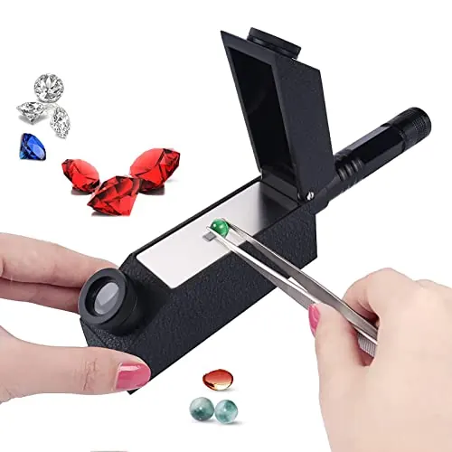

偏光鏡與二色鏡：看穿寶石的光性
有些寶石「從不同方向看顏色不同」——二色鏡把這秘密變成鑑定證據。

核心定義
偏光鏡（polariscope）：兩片偏振片夾住寶石，透過轉動判斷「光性」——單折射（鑽石、尖晶石、石榴石、玻璃）與雙折射（紅寶、藍寶、碧璽、石英）一目了然。二色鏡（dichroscope）：觀察寶石的「多色性」——雙折射寶石從不同方向呈不同顏色。
兩者的應用：偏光鏡先分「單/雙折射家族」，二色鏡再細看「多色性」——紅寶（強二色性：紅/橙紅）、藍寶（藍/綠藍）、碧璽（強多色）——「顏色會變」是雙折射寶石的身分特徵。
特徵與分類
| 寶石 | 偏光 | 多色性 |
|---|---|---|
| 鑽石 | 單折射 | 無 |
| 紅寶 | 雙折射 | 強（紅/橙紅） |
| 藍寶 | 雙折射 | 強（藍/綠藍） |
| 碧璽 | 雙折射 | 極強 |
| 石榴石 | 單折射 | 無 |
| 玻璃 | 單折射（異常） | 無 |
偏光鏡的「異常消光」：玻璃與部分石榴石在偏光鏡下有「蛇紋狀」異常——這是非晶質/應力玻璃的特徵，也是鑑定玻璃仿品的利器。
科學原理
偏光原理：偏振片只讓單一方向的光通過——雙折射寶石把光分成兩束（偏振方向不同），轉動寶石時亮度變化（明暗交替）；單折射寶石亮度均勻。玻璃的「異常消光」：內部應力造成局部雙折射。
多色性原理：雙折射寶石的兩個方向吸收不同顏色——二色鏡（兩片偏光片並排）讓鑑定師同時看兩個方向的顏色。紅寶的「紅/橙紅」、藍寶的「藍/綠藍」——多色性強弱是品種特徵。
鑑定與鑑別方法
- 偏光鏡：單/雙折射判斷
- 二色鏡：多色性觀察
- 排除玻璃：異常消光
- 查表：多色性→品種線索
- 配合折射儀：確認
市場行情與保養建議
市場價值：偏光鏡（約數百人民幣）與二色鏡（約數百）是「廉價高效」的鑑定工具——幾百元就能區分紅寶/尖晶石（偏光）、玻璃仿品（異常消光）。鑑定入門的「性價比神器」。
提醒：多色性「強弱」是品種特徵，但不是唯一證據——二色鏡的觀察要配合折射儀與比重。光學工具是「線索」，不是「判決」。
常見誤區
多色性是雙折射寶石的物理特性（紅寶、藍寶天生如此）——不是瑕疵。品質與多色性無關。
不透明寶石（瑪瑙、綠松石）無法測——偏光鏡限「透明寶石」。它是一把鑰匙，不是萬能鑰匙。
冷知識
藍寶石的多色性讓切磨要「對方向」——切對了顏色濃豔，切錯了發灰。「方向」是藍寶切工的秘密。
玻璃內部應力造成局部雙折射——偏光鏡下的蛇紋亮紋，是玻璃的「出身證明」。
反直覺觀點
多色性是晶體結構的物理事實——紅寶的紅橙、藍寶的藍綠，都寫在晶格裡。會變的顏色，是身分的保證。
玻璃仿品在偏光鏡下的異常消光、合成品的生長紋——幾百元的工具，識破幾百萬的騙局。